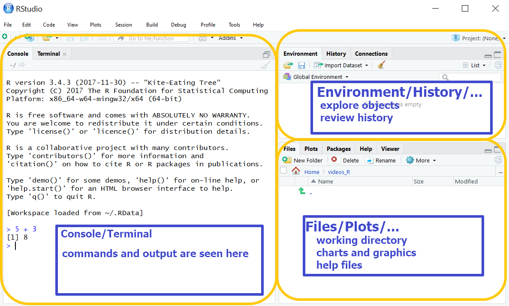
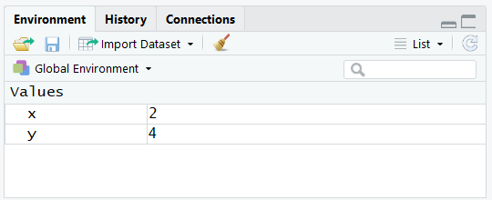
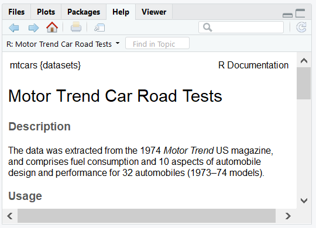

Week 1 Getting Started
This unit spans Mon, Jan 06, 2020 through Sat, Jan 11, 2020.
At 11:59 PM on Sat, Jan 11, 2020 the following items are due:
- Introduction to SQL/Intermediate SQL
This unit reviews the course syllabus, expectations, and the tools we will be using throughout the semester. We’ll also cover some of the more basic functions in R.
All analytics projects have an associated workflow with them. The tools we will be using in this class support the tidy workflow described in R for Data Science and shown below.

While this course will cover all stages of the workflow, we will be spending considerable amounts of time: importing data from a variety of sources; tidying our data to a consistent format; transforming the data to conform with what we want to analyze and; communicating results. Your first assignment, due at the end of this unit, has you focusing on communications by publishing a simple report about yourself. Before we get to explore any of these stages, we need to learn a commonly used tool for analytics, namely R.
1.1 Course Tools
1.1.1 What is R?
R is a programming language that is widely used for business analytics but, at its heart, is a software environment for statistical computing. For the first part of this course, we will be using R to wrangle data and perform simple analytics (e.g., aggregation, regression, visualization). We will also be using R to communicate and share our analyses via R Markdown.
R was developed at the University of Aukland as an open source implementation of the S programming language created by John Chambers at Bell Labs. While it was initially written by and for statisticians, it has evolved into one of the most widely used analytics platforms, and there are implementations at companies like Microsoft, Google, Facebook, Amazon, and local firms like WEX, Arkatechture, and Maine Health. Some of the organizations that contribute to the open source R project include Microsoft, RStudio, and The R Foundation. We will spend most of our time using RStudio as our primary interface to R.
1.1.2 Install R and R Studio
Technically, R is a programming language for statistical computing and graphics. For the first part of this semester, what we will be doing in R is very similar to what can be accomplished in Excel. To some students, it might not become evident how much more robust R is until we get into the later parts of the semester. For those that need external validation, Microsoft has been investing heavily in R, which was already a popular language before Microsoft became involved.
RStudio is a robust IDE for R. While it isn’t necessary for writing code in R, it does make life substantially easier. We aren’t going to spend much time talking about R and RStudio until after we have used the technologies for a bit. Before we do that, we need to install the software.
The installation of R and RStudio is straightforward:
For Windows:
- If you don’t know whether or not you are running 32 or 64-bit windows and are using Windows 10, go to Start –> Settings –> System –> About and look at your system type. If you are using prior versions of Windows, Google “Windows [your version here] how can I tell if I have 32 or 64 bit.”
- Go to https://cran.r-project.org/ and select Download R for Windows.
- Select base
- Download the most recent version of R for Windows (top of the page).
- Double-click on the executable file you just downloaded to install R. If you are running 64-bit Windows, you’ll want to install 64-bit R.
- Go to https://www.rstudio.com/products/rstudio/download/ and download the Windows version of RStudio Desktop.
- Double-click on the executable file you just downloaded to install RStudio Desktop.
For Mac
- If you don’t know what version of OS X you are running, select About This Mac from the Apple menu.
- Go to https://cran.r-project.org/ and select Download R for (Mac) OS X.
- Download the R version recommended for your operating system version.
- Double-click on the pkg file you just downloaded to install R.
- If you are running OS X 10.7 or later, you’ll want to install XQuartz as well. The link is also provided on the CRAN page.
- Go to https://www.rstudio.com/products/rstudio/download/ and download the Mac OS X version of RStudio Desktop.
- Double-click on the package file you just downloaded to install RStudio Desktop.
1.1.3 Why Piazza?
In my opinion, Piazza is one of the better ways to foster community in an online asynchronous class. We’ll be using it:
- for class announcement
- to share files
- for private and public messaging
- to post questions and help answer them
In Piazza, sign up for for this course at piazza.com/usm.maine/fall2019/ban300. Piazza also has a mobile application for Android, and iOS.
1.2 RStudio
We’ll be using RStudio as the Integrated Development Environment (IDE) for this course. If you are having problems installing it, please post a specific question about the problem you are having in Piazza. Vague questions like “how do I install RStudio” will either be ignored or you’ll be prompted to be more specific. Part of being a business analyst is understanding your computing environment and being able to install and manage software, whether that be a Mac or Windows PC (if you are a Linux user, you are probably way ahead of the curve).
When you first launch RStudio, there are three visible panes. We’ll go through a brief description of each pane and will have far more coverage of RStudio later in the semester after we become more comfortable with the R language. There is also a fourth pane that we’ll discuss later.
- Console/Terminal (default position - left/bottom left)
- Environment/History/… (default position - top right)
- Files/Plots/… (default position - bottom right)

1.2.1 Console
In this unit, we’ll primarily be working in the console. In the screenshot, I’m using the console as a calculator. When you type 5 + 3 the R console outputs [1] 8. For now, don’t get hung up on the [1] in the output – it represents the first element in a vector. Since we are performing a simple calculation, the result 8 is merely a one element vector with the value of 8.
Go ahead and type the following commands (press ENTER after each) in your console and see what happens.
x <- 2
y <- 4
y
Y
x + y
head(mtcars)The first thing you should notice is that while y gave us an output of [1] 4, Y gave us an output of Error: object 'Y' not found. That is because R is case sensitive. R has some built-in datasets like mtcars which contains data for fuel consumption and automobile design for 32 automobiles (1973-74 models) from Motor Trend magazine.
## mpg cyl disp hp drat wt qsec vs am gear carb
## Mazda RX4 21.0 6 160 110 3.90 2.620 16.46 0 1 4 4
## Mazda RX4 Wag 21.0 6 160 110 3.90 2.875 17.02 0 1 4 4
## Datsun 710 22.8 4 108 93 3.85 2.320 18.61 1 1 4 1
## Hornet 4 Drive 21.4 6 258 110 3.08 3.215 19.44 1 0 3 1
## Hornet Sportabout 18.7 8 360 175 3.15 3.440 17.02 0 0 3 2
## Valiant 18.1 6 225 105 2.76 3.460 20.22 1 0 3 1Performs the head function, which shows the first parts of an R object, in this case, the mtcars data frame (we’ll cover data frames in the next unit). You might also notice that when we assigned the values 2 to x and 4 to y, there was no output but the top right environment pane updated.
1.2.2 Environment

The environment tab (top-right) can help us navigate through some reasonably complex R objects. For now, we can see that it shows us the values of any variables that were created.
1.2.3 Files
In the console type ?mtcars. You’ll notice that the bottom-right pane that was at the Files tab moved to the Help tab and is now showing the help file for mtcars. You call help using the help function or appending the ? help operator to the front of what you are seeking help on. Try help(head) and ?head. Notice there is no difference in the output. This bottom right pane also shows the files in our working directory, will switch to the Plots tab when we create visualizations and has some pretty nice features that we’ll examine throughout the semester.

1.3 Beginning R
In addition to performing simple commands, we will be performing calculations, comparisons, and working with character data. Feel free to try any arithmetic operations in the console (or the editor) – for example:
## [1] 21Comparisons are also commonly done and result in a logical value. If I type the expression 2 < 5 what do you think the result will be? The expression returns a logical value.
## [1] TRUEFinally, we often wind up analyzing character data. We always enter this type of data enclosed in single quotes ' or double quotes ". In R, they are interchangeable, but for folks with programming experience in other languages, you’ll probably find yourself using double quotes to enclose characters, but it doesn’t matter. Being consistent in what you use does make your code more readable. We’ll get more into character data in the next unit, but results might not be what you expect.
## [1] FALSEAlso, keep in mind, that we can do multiple things in a single statement, so it is helpful to know your order of operations. The double equals == is known as a comparison operator and is a logical “is equal to” test.
## [1] TRUER programs are typically interpreted sequentially. Looking at the example below, notice the value of z?
## [1] 6The <- symbol is referred to as the assignment operator in R. In most programming languages, the = is used and, while this is permissible in R, this class will use the traditional R assignment operator. x <- 2 is read as “assign the value 2 to the variable x”. In the example above, although we change the value of x from 2 to 3, z is assigned the value 2 + 4 before x is modified, so the value of z remains 6.
1.3.1 Scalars
The terms scalar and vector are commonly used in linear algebra and physics. In computing, a scalar variable holds a single value and a vector variable contains multiple values. If the values in a vector are all the same data type, the object is called an atomic vector. In R, and most other programming languages, when people use the term vector they are referring to an atomic vector. In R, the vector is an object, or more specifically – a data object but we typically call these objects variables.
If I type x <- 2.2 I am using the assignment operator <-to assign the value 2.2 to the variable x. If I asked you to describe what type of data 2.2 is, you might say a real number. In R, we would say 2.2 is a numeric value and x becomes a numeric variable when we store 2.2 in it.
## [1] "numeric"If you have worked with statically typed programming languages like C++ and Java, you might find it strange that I don’t explicitly state that x is a numeric variable. That is because R is a dynamically typed language like Python, JavaScript, and Ruby where x becomes typed by what it contains. The primitive types of data we have access to in R are:
- integer
- numeric
- character
- complex
- logical
One caveat here is that integer is technically a subclass of numeric so if I assign what looks like an integer to a variable (e.g., y <- 2) R would still type y as a numeric variable. I need to explicitly use as.integer() if I really want to create an integer (e.g., y <- as.integer(2)). You can also type an integer by suffixing with L (e.g., y <- 2L) which is easier but less obvious to the reader (L stands for literal).
1.3.3 Vectors
R is a vectorized language. This is what makes R powerful for analytics calculations. Consider a simple math problem:
\[\begin{bmatrix}2 \\ 4 \\ 6\end{bmatrix} + \begin{bmatrix}3 \\ 5 \\ 7\end{bmatrix} = \begin{bmatrix}5 \\ 9 \\ 13\end{bmatrix}\]
Because R is vectorized, it is optimized (i.e., works quickly) for these types of calculations. We already know how to create vectors because when we ran the line that contained the code x <- 2.2 we created a single element numeric vector called x. If we want to make multi-element vectors, we need to use the c command to combine elements.
## [1] 5 9 13Vectorization allows us to use “Excel-like” functions reasonably easily.
## [1] 10000 15000 17500 16500## [1] 500 1000 1300 1300## [1] 1025Operations on vectors are one of the greatest things that R has going for it. I don’t need to use looping structures at all, it performs complex calculations, and it does them quickly.
Each element in a vector has an index starting with 1 and incrementing so sales[1] would return 2000, sales[3] would return 3500. sales[8] would return an NA which stands for “Not Available.” We can also slice elements out of vectors by using the negative sign. sales[-2] would give us all the elements except the second or 2000 3500 3300. I can also reference a range of elements in a variety of ways. sales[1:3], sales[c(1,2,3)] and sales[-4] all return the same values. You’ve probably noticed this already, but we use the square bracket [] to state we are referencing an index in a vector.
You can even duplicate indexes sales[c(1,2,2)] and use them out of order sales[c(2,1,3)]. We can even perform comparisons on vectors (e.g., sales == 3000). It is important to understand that operations on vectors are performed element by element and produce another vector. So sales == 3000 and sales - cost will both return four element vectors. The former will return a logical vector, the latter a numeric vector. If I use equal length vectors, everything works as planned. R will also perform calculations on unequal vectors but recycles the shorter vector to do so. For example, sales - costs[-4] will perform the element by element calculation for the first three elements, then it will recycle the shorter vector and effectively calculate sales[4] - costs[1] for the fourth element in the result (which will be 1800).
I can append elements to a vector using the append command, but unless I assign the appended vector to the original variable, the appended value doesn’t get stored in the variable. See the code below for more clarity
## [1] 2000 3000 3500 3300## [1] 2000 3000 3500 3300 4000## [1] 2000 3000 3500 3300If I wanted to store the appended value in sales, I would enter sales <- append(sales, 4000) to assign the appended vector to sales.
To test your level of comprehension, see if you can guess the result of mean(sales[-1] - costs[2:3]).
1.3.4 Vector length
When you don’t realize vectors have unequal length, there can be unexpected errors. The length command is often used when working with vectors. It returns the number of elements in a vector so length(sales) should return 4. Be aware that any NA values are counted in length.
You can also combine vectors using the c command. Below are two examples of using length and combine.
## [1] 7## [1] 9## [1] 7A couple of things you should notice in the example above. Adding an element in the fifth position of x when it is a three element vector results in the value of x[4] being NA. Also, because z was defined as the combination of x and y before we alter x to a five-element vector, z doesn’t get modified along with x.
Below is a list of the more common descriptive statistical functions you can perform on vectors. Note: if they aren’t self-explanatory, I provide a brief description in the parenthesis).
- mean
- sd
- var
- min
- max
- median
- range
- quantile
- summary (provides a variety of information – try it!)
- fivenum (returns Tukey min, lower-hinge, median, upper-hinge, max)
1.3.5 Character vectors and strings
## [1] "character"## [1] "character"## [1] 3## [1] 1If you look at the code above, you’ll see that R considers both c("b","a","c") and "bac" as character vectors of length 3 and 1 respectively. We use the term string to describe "bac" even though it technically is still a character vector. Usually, when people use the term character vector they are talking about a vector where each element is a single character.
While R doesn’t make an explicit distinction between characters and strings, there are very definitive differences in how we interact with them. You can see that length(a) is 3 while length(b) is 1. If we wanted to determine how many characters there are in b we would use the nchar command nchar(b), which would return 3. Likewise, we can use the commands rev for reverse and sort on character arrays, as shown below, because they reverse and sort by element. The same effect wouldn’t occur if we used them on strings.
## [1] "c" "a" "b"## [1] "a" "b" "c"1.3.6 Strings
You’ll likely work with far more string data throughout your life but remember, strings are character vectors as well. We are going to cover some simple string manipulation in this unit but will go into far more depth when we discuss lexical analysis later in the semester.
rooms <- c("Living Room", "dining room", "kitchen")
colors <- c("Navaho White", "Stonington Gray", "Edgecomb Gray")
comments <- c("Patch ceiling hole - Bob", "Use a tinted primer - Joe",
"Look's pretty good - Ann")
price <- c(245.30, 300, 180.25)Using the three variables above rooms, colors, comments, and price, let’s create a simple, albeit ugly, report that looks something like the one below.
## [1] "LIVING ROOM" "DINING ROOM" "KITCHEN"## NvhWh - StnnG - EdgcG## Patch ceiling hole. Use a tinted primer. Look's pretty good## Prices: $245.30 $300.00 $180.25If you go through the output line-by-line, there are a few things you should notice.
- The rooms are all upper case, enclosed in double quotes, and the index number
[1]is in the output. - The colors are abbreviated by removing vowels and spaces and separated by a hyphen.
- The names associated with the comments (Bob, Ann, Joe) are removed, and the comments are terminated with a period.
- The prices are formatted.
We’re going to be using the following string functions to accomplish the report. Remember, you can type ? followed by the function name to get help.
print- outputs to the console and includes an index number.cat- concatenates and outputs to its arguments to the console without an index and characters are not enclosed in quotes.paste- similar tocatbut returns a value whilecatsimply outputs to the console.substr- extracts or replaces substrings in a character vector.toupper- converts characters to upper case.abbreviate- abbreviates stringsformat- formats an object for pretty printing.
Looking at what has been presented, we can tell that we are using print to display the rooms after using toupper to convert them to all uppercase. Right now, since everything we are doing is being sent to the console, print serves no purpose - print(toupper(rooms)) will give the same output as the simple toupper(rooms). We’ll explore the value of print later in the semester. Given the order of operations dictates that inner parentheses are performed/evaluated first, R supports nesting commands or functions (i.e., toupper gets performed, then we print the results).
The second line of output doesn’t enclose characters in quotes, so we know we are using cat. We will also instruct cat to use space-hyphen-space - to separate the paint colors. If we simply use cat(colors, sep = " - ") that will get us part way there, but we still need to abbreviate the colors. Lucky for us we can specify that we want to abbreviate colors to five character strings with abbreviate(colors, 5). The default behavior is to remove spaces and vowels. We nest the commands and get cat(abbreviate(colors, 5), sep=" - ")
I want to pause for a second and introduce some terminology. When I talk about abbreviate I might use the term function to refer to it, or I might say command. I do use the terms interchangeably, but commands are simply built-in functions (i.e., ones that you don’t write). They typically have what is referred to as arguments and these are instructions or parameters that you pass to the function. If you type ?abbreviate in the Usage section you’ll see the arguments that abbreviate accepts, what the default values are and a brief explanation. There is also some shorthand that I use with the function. When I enter abbreviate(colors, 5) it is a short version of typing abbreviate(colors, minlength = 5). I won’t go into the gory details of this but when in doubt, use the longer form – it helps to reduce unexpected consequences.
If you look at the way the comments are displayed, we have truncated to remove the names and the hyphen preceding the names. Lucky for us, all of the names in this example are three characters, and the space-hyphen-space preceding them are an additional three characters. We can simply use the substr function to take all but the last six characters substr(comments, 1, nchar(comments) - 6) – we explicitly state from the first character to the number of characters in the comment minus six. Combining that with cat gets us the terminating period and spacing – cat(substr(comments,1, nchar(comments)-6), sep = ". "). You’ll notice that this leaves off the trailing period. We can fix this by combining cat and paste cat(paste(substr(comments,1, nchar(comments)-6), ".", sep="")).
You’ll notice a couple of things with the prices output. First, we are formatting to two decimal positions – format(price, nsmall = 2) tells R to format the numeric vector with two digits to the right of the decimal. The currency symbol is a little trickier. We can’t use cat("$", price) because that will place only a single currency symbol at the beginning of the output. We can specify the currency symbol as the separator because that places it after the number. Here we need to use the paste function in combination with cat to accomplish this – cat("Prices: ",paste("$", format(price, nsmall = 2), sep=""))
1.4 Matrices
We aren’t going to be spending much time with matrices in this course so I’m providing a quick overview and will go into further detail when we actually need to interact with them.
A vector is uni-dimensional. It is easy to think of as a row (or column) of data. A matrix is two-dimensional and has columns and rows. I would recommend avoiding the spreadsheet metaphor for matrices, even though they have rows and columns, simply because the data must be all the same type making it a very specialized type of spreadsheet. We reference matrix elements similar to vector elements but we specify the row number and column number in that order. We use the matrix function to create a matrix, and specify the numbers of rows and columns.
## [1] 4The default pattern for creating a matrix is by column so row 1, column 1 receives the first value and row 2, column 1 receives the second value. If you specify byrow = TRUE you are telling R to populate by row instead of by column. In the matrix above, m[2][1] returns the value in row 2, column 1.
1.5 DataCamp Exercises
This unit’s DataCamp exercises start you off with the first half of their Introduction to R course.
1.3.2 Comments
Before we proceed, I want to introduce an unrelated concept that is going to be used throughout the semester – the comment. A [comment] is merely an annotation that is wholly ignored by the computer. It is meant for the humans, and those humans can be you or other people working on your code. We use the hash symbol
#to represent a comment, and that instructs the computer to ignore the hash and everything to the right of it until the next line. Comments can be on their own lines in the same line as your code, provided it is at the end of the line. See the code below for an example of comments and also the other data types we haven’t yet discussed.We’ve already discussed integers. Character data we’ll be covering in more depth but for now, understand that character data is enclosed in quotes…it is good practice to use double quotes, but you can actually use either double or single quotes in R. If I typed something like
c <- "2"I would be storing the character 2 incand not the numeric value.If you fear complex numbers, you’ll be happy to know that we won’t be covering them and
a <- 3 + 2iis the only time you’ll see them this entire semester.Logical variables can only contain
TRUEorFALSEand a gentle reminder regarding the order of operations again.b <- 3 == 2has the same result asb <- FALSEbecause the comparison is done before the assignment (the assignment is the last operation performed).You’re going to want to call the variables we’ve created so far scalar because they each hold a single value. Here is the confusing part – there is no such thing as scalars in R. What we just created was single element vectors. If you haven’t been exposed to programming in the past, this shouldn’t seem like an issue. Especially since we haven’t discussed vectors yet.